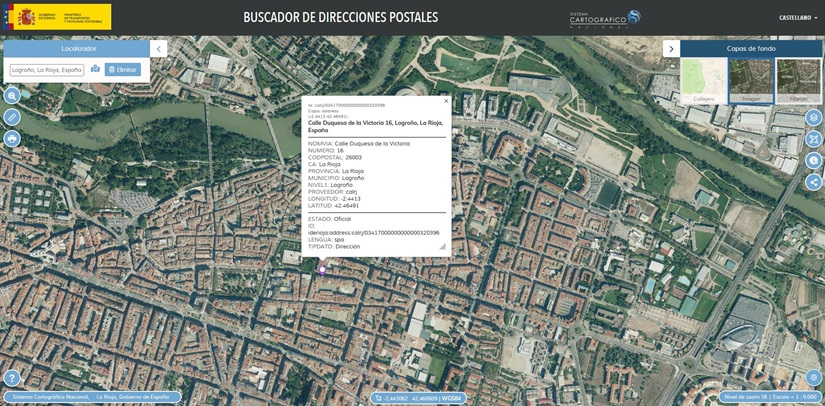

Servicio de geocodificación o geolocalización de direcciones postales del Sistema Cartográfico Nacional de España
El 14 de diciembre de 2020 la Comisión Especializada de Normas Geográficas (1) del Consejo Superior Geográfico de España, puso en marcha un subgrupo de trabajo para la realización del proyecto «Especificaciones básicas para la implementación de un Servicio Nacional de Geocodificación o Geolocalización de Direcciones postales».
Además, para poder mostrar las posibilidades del servicio se ha desarrollado un visualizador titulado «Buscador de direcciones postales» con la API del CNIG basado en Openlayers.

Nota:
En este visualizador se ha implementado el servicio de Geolocalización del SCN sin ningún tipo de filtro respectivo con el proveedor de datos, por ello se muestran todas las direcciones almacenadas en Elasticsearch.(1) La Comisión Especializada de Normas Geográficas es un órgano de estudio, creado a propuesta de la Comisión Permanente y Pleno del Consejo Superior Geográfico, cuyo objetivo principal, según el RD 1545/2007 por el que se regula el Sistema Cartográfico Nacional, es el de elaborar propuestas sobre normas cartográficas que contengan criterios normalizados, a los que deberá ajustarse la cartografía incluida en el Sistema Cartográfico Nacional, con el fin de armonizar los datos geográficos producidos por distintas organizaciones y facilitar el uso de la información geográfica.